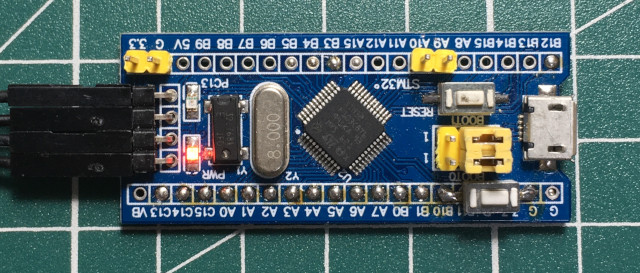
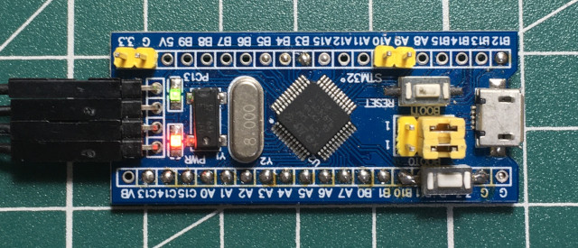

Steward
分享是一種喜悅、更是一種幸福
微處理器 - STMicroelectronics STM32F103 - Assembly - LED
參考資料：
https://www.st.com/resource/en/reference_manual/cd00171190-stm32f101xx-stm32f102xx-stm32f103xx-stm32f105xx-and-stm32f107xx-advanced-arm-based-32-bit-mcus-stmicroelectronics.pdf
RCC_APB2ENR暫存器，需要開啟GPIO-C的Clock

LED位置是PC13，設定成Output 50MHz

輸出資料

main.s
.thumb
.cpu cortex-m3
.syntax unified
.equ GPIOC_CRL, 0x40011000
.equ GPIOC_CRH, 0x40011004
.equ GPIOC_IDR, 0x40011008
.equ GPIOC_ODR, 0x4001100c
.equ GPIOC_BSRR, 0x40011010
.equ GPIOC_BRR, 0x40011014
.equ GPIOC_LCKR, 0x40011018
.equ RCC_APB2ENR, 0x40021018
.equ STACKINIT, 0x20005000
.global _start
.section .text
.org 0x0
.word STACKINIT
.word _start
.org 0x100
.align 2
.thumb_func
_start:
ldr r0, =0x00000010
ldr r1, =RCC_APB2ENR
str r0, [r1]
ldr r0, =GPIOC_CRH
ldr r1, =(3 << 20)
str r1, [r0]
ldr r2, =GPIOC_ODR
ldr r3, =(1 << 13)
loop:
str r3, [r2]
eor r3, (1 << 13)
ldr r0, =50
bl delay
b loop
.align 2
.thumb_func
delay:
push {lr}
0:
ldr r1, =8000
1:
sub r1, #1
cmp r1, #0
bne 1b
sub r0, #1
cmp r0, #0
bne 0b
pop {pc}
.end
main.ld
MEMORY {
RAM (xrw) : ORIGIN = 0x20000000, LENGTH = 20K
FLASH (rx) : ORIGIN = 0x8000000, LENGTH = 128K
}
SECTIONS {
.text : {
*(.text)
} > FLASH
.bss : {
*(.bss)
} > RAM
.data : {
*(.data)
} > RAM
}
Makefile
all: arm-none-eabi-as -ggdb -mcpu=cortex-m3 -mthumb -mthumb-interwork -o main.o main.s arm-none-eabi-ld -T main.ld -o main.elf main.o arm-none-eabi-objcopy -O binary main.elf main.bin flash: sudo openocd -f /usr/local/share/openocd/scripts/interface/stlink.cfg -f /usr/local/share/openocd/scripts/target/stm32f1x.cfg -c "program main.bin reset exit 0x8000000" debug: sudo openocd -f /usr/local/share/openocd/scripts/interface/stlink-v2.cfg -f /usr/local/share/openocd/scripts/target/stm32f1x.cfg -c "program main.bin halt 0x8000000" clean: rm -rf main.o main.elf main.bin
編譯
$ make
arm-none-eabi-as -ggdb -mcpu=cortex-m3 -mthumb -mthumb-interwork -o main.o main.s
arm-none-eabi-ld -T main.ld -o main.elf main.o
arm-none-eabi-objcopy -O binary main.elf main.bin
燒錄
$ make flash
sudo openocd -f /usr/local/share/openocd/scripts/interface/stlink.cfg -f /usr/local/share/openocd/scripts/target/stm32f1x.cfg -c "program main.bin reset exit 0x8000000"
Open On-Chip Debugger 0.11.0-rc1+dev-00010-gc69b4deae-dirty (2020-12-27-01:20)
Licensed under GNU GPL v2
For bug reports, read
http://openocd.org/doc/doxygen/bugs.html
Info : auto-selecting first available session transport "hla_swd". To override use 'transport select '.
Info : The selected transport took over low-level target control. The results might differ compared to plain JTAG/SWD
Info : clock speed 1000 kHz
Info : STLINK V2J17S4 (API v2) VID:PID 0483:3748
Info : Target voltage: 3.195294
Info : stm32f1x.cpu: hardware has 6 breakpoints, 4 watchpoints
Info : starting gdb server for stm32f1x.cpu on 3333
Info : Listening on port 3333 for gdb connections
target halted due to debug-request, current mode: Thread
xPSR: 0x01000000 pc: 0x08000100 msp: 0x20005000
** Programming Started **
Info : device id = 0x20036410
Info : flash size = 128kbytes
** Programming Finished **
** Resetting Target **
shutdown command invoked
完成

